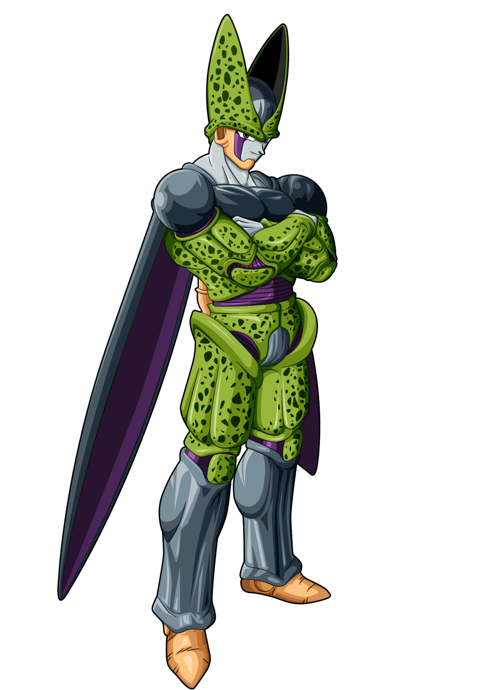

Perfect Cell

Biography:
The ultimate creation of Dr. Gero, who came from a future timeline, designed using the genetics of the greatest fighters to have been present on Earth that the remote tracking device could track down; the result was a "perfect warrior", possessing numerous favorable genetic traits and special abilities from Goku, Vegeta, Piccolo, Frieza and King Cold. He was one of the few Red Ribbon Androids not directly completed by Dr. Gero; he was completed by Dr. Gero's Supercomputer. He is the main antagonist of the Imperfect Cell, Perfect Cell, and Cell Games Saga.
Places lived:
During his time of terror, Cell has visited Gingertown, the area of his now infamous Cell Games, North/Metro City, and the mountainous region that housed Dr. Gero's lab.
Famous Quotes:
"Why am I so damaged?! "Thank you, Goku, I will use this bean with out hesitation!"